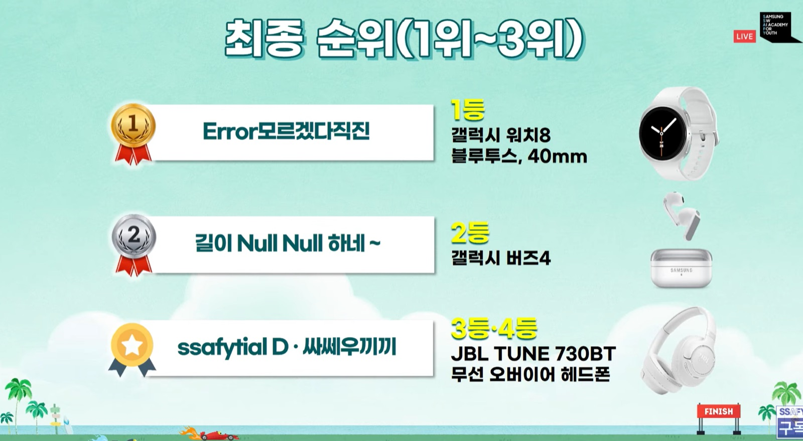
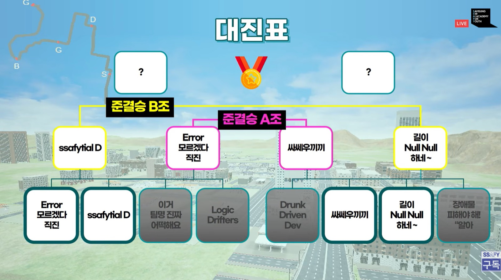
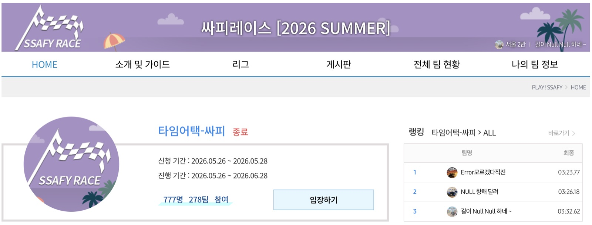

삼성청년SW·AI아카데미에서 열린 자율주행 시뮬레이션 알고리즘 경진대회입니다(777명 · 278팀 참가). 실시간으로 주어지는 차량·도로 정보를 기반으로 조향·가속·감속을 제어해, 장애물이 배치된 다양한 트랙을 완주해야 합니다. 막연히 "빠르게"가 아니라 완주를 보장하면서 랩타임을 단축한다로 목표를 정의하고, 1위 기록과의 격차를 수치로 추적하며 접근했습니다.
전체 278팀 중 2위를 달성했습니다. 가설을 설정하고, 기각 기준을 정한 뒤, 측정과 검정으로 채택·기각을 판단하고, 그 이력을 문서로 누적하는 가설 검정 사이클을 반복해 얻은 결과입니다. "작은 차이는 노이즈, 유의미한 변화만 반영한다"는 판단 기준으로 노이즈에 맞추는 과적합성 튜닝을 배제했고, 데이터 기반 가설 검정이 실제 성과로 이어짐을 확인했습니다.

